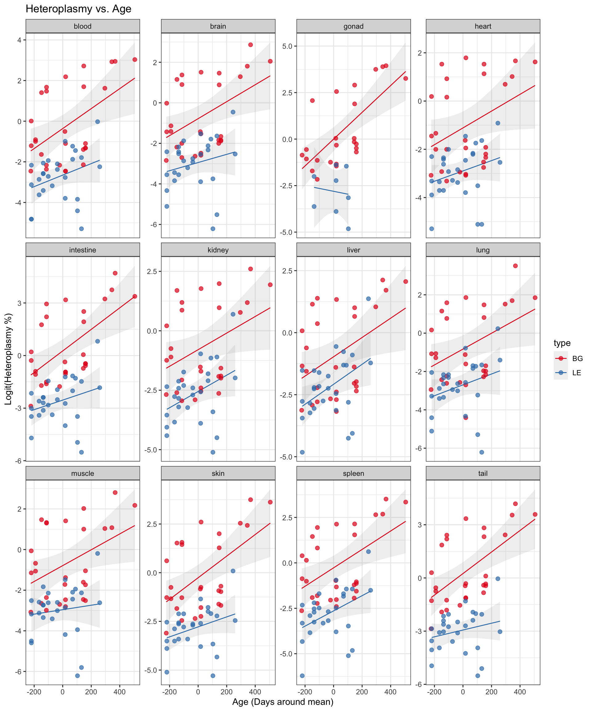
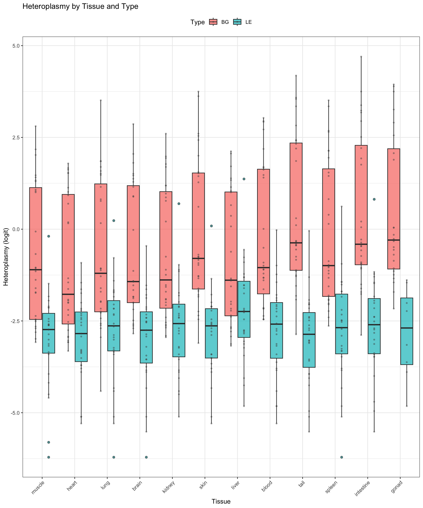
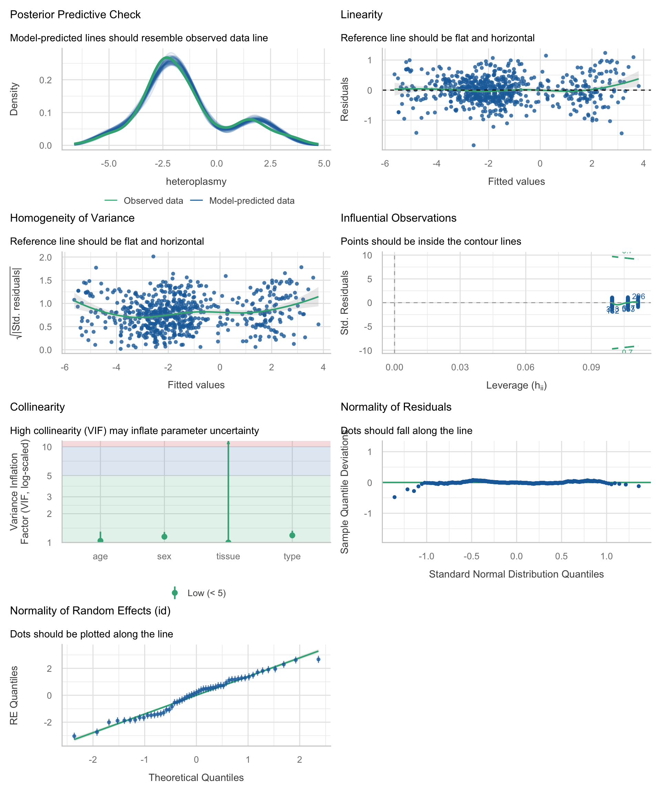
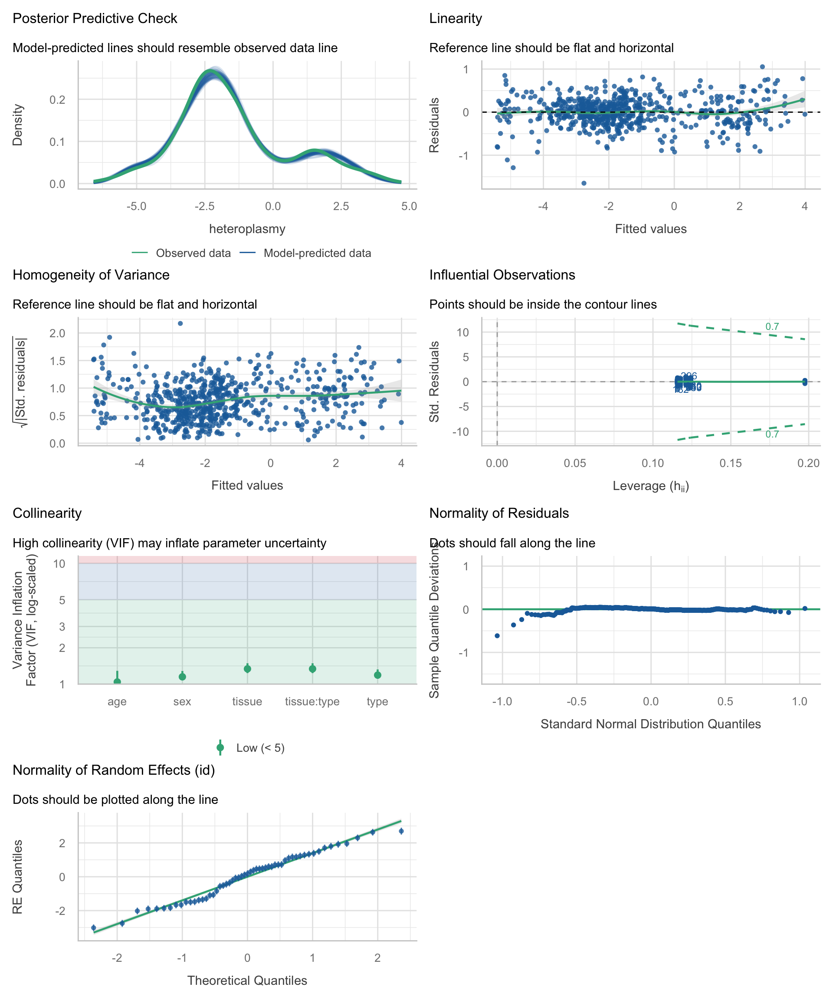
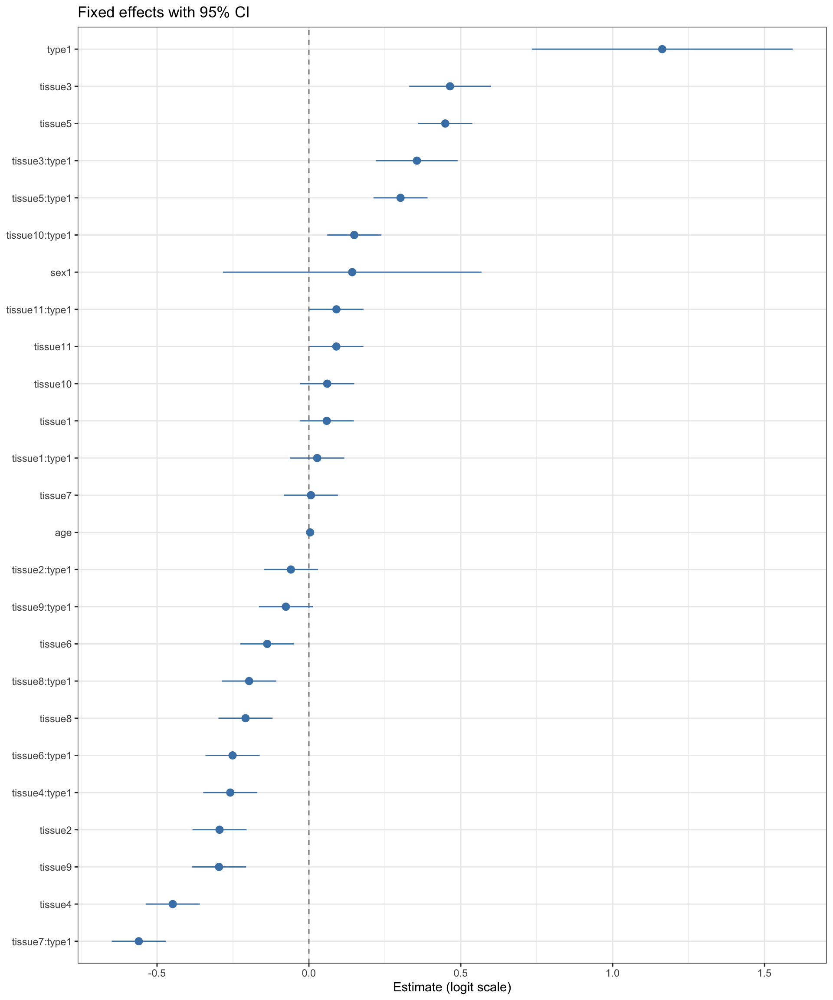
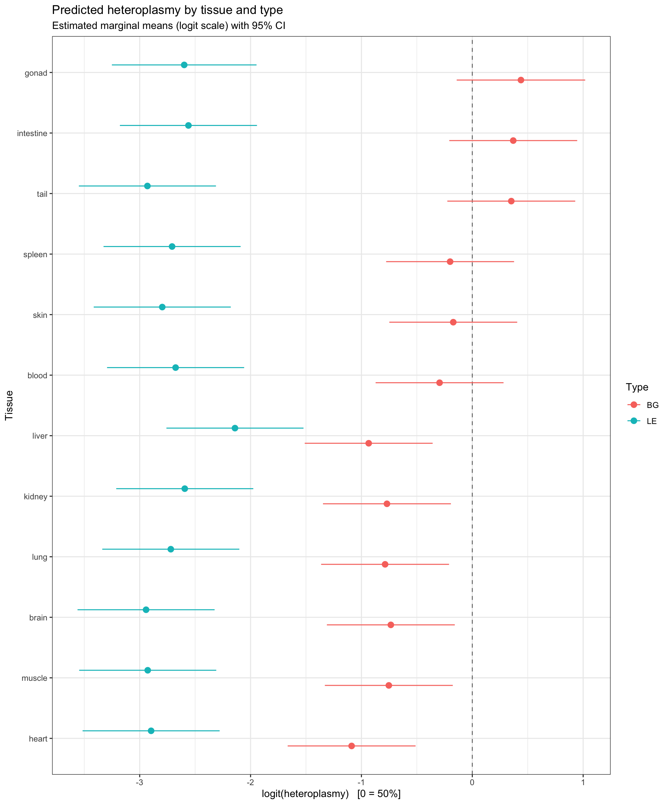

Heteroplasmy refers to the coexistence of different mitochondrial DNA (mtDNA) variants within the same cell or organism. Its level can vary between tissues and may change over time as mitochondrial populations undergo replication, segregation, and selection. Understanding these patterns is therefore important for characterizing how mtDNA variation is maintained and distributed across an organism.
In this analysis, we model heteroplasmy in mice to investigate how it varies across different tissues, mouse types, age, and sex. Because heteroplasmy is measured as a percentage and is bounded between 0 and 100%, the measurements are transformed using a clamped logit transformation prior to modeling. Linear mixed-effects models are then used to account for both fixed effects, such as tissue, age, type, and sex, and repeated measurements from the same mouse. Different model specifications are compared to identify which combination of factors best describes the observed variation in heteroplasmy.
Importing libraries, defining functions.
Code
library(dplyr)library(tidyr)library(lme4)library(lmerTest)library(performance)library(ggplot2)library(see)library(corrplot)library(broom.mixed)library(emmeans)options(na.action ="na.omit")options(contrasts =c("contr.sum", "contr.poly")) # Sum coding is more fitting here.
logit <-function(x) { p <- x /100 p <-ifelse(p <=0, 0.0001, ifelse(p >=1, 0.9999, p))return(log(p / (1- p)))}
Loading the data.
#Load in data.df <-read.csv("mouse-mtdna.csv", stringsAsFactors =FALSE)# Apply logit to all tissue columns.metadata_cols <-c("index", "type", "id", "sex", "age")df <-mutate(df, across(-all_of(metadata_cols), logit))
head(df,5)
index type id sex age tail.21 brain heart muscle
1 7 BG BG144 F 33 -2.6021528 -2.84385174 -3.0785683 -3.07856828
2 8 BG BG150 F 36 0.5971325 -0.02000067 0.1885567 -0.06402186
3 9 BG BG154 M 36 -1.1636759 -1.43063348 -1.4500102 -1.14720484
4 10 BG BG72 M 66 -0.5279292 -1.41148461 -1.3370233 -0.67669206
5 11 BG BG73 M 66 -0.8616248 -1.13630181 -2.0019341 -1.06161996
kidney liver lung blood intestine skin
1 -2.6827324 -3.12717816 -2.9444390 -2.456012184 -2.8830072 -3.1026033
2 0.2087548 0.07603661 0.1643691 0.008000043 0.2087548 0.6102595
3 -1.2425065 -1.34310443 -1.0773913 -1.208311206 -0.2818512 -1.2773597
4 -0.7491800 -0.61464649 -1.0668636 -0.909999205 -0.9002457 -0.7537718
5 -1.1039528 -1.55753947 -1.2832353 -0.994622575 -1.0773913 -1.3370233
spleen tail testis uterus
1 -2.6337126 -2.8632585 NA NA
2 0.3929806 0.2981901 NA NA
3 -0.8712224 -1.2832353 -0.8616248 NA
4 0.1442496 -0.7491800 -0.5623668 NA
5 -1.0098970 -0.5537276 -1.0668636 NA
Quick test to verify that there is atleast some heteroplasmy change spotted, here in tail. Checking assumtpion about normality in tail difference distribution.
shapiro.test(df$tail-df$tail.21)
Shapiro-Wilk normality test
data: df$tail - df$tail.21
W = 0.94785, p-value = 0.0185
Since failed, we resort to the non-parametric alternative.
wilcox.test(df$tail,df$tail.21,paired=TRUE)
Wilcoxon signed rank test with continuity correction
data: df$tail and df$tail.21
V = 1171, p-value = 5.625e-05
alternative hypothesis: true location shift is not equal to 0
Preparing the data.
With the initial check done, the data is reshaped for modelling. The snapshot column is dropped, sex-specific gonad tissues are pooled, the table is pivoted to long format, and age is centred. This leaves one row per mouse and tissue.
# Drop the tail.21 data since it's a snapshot, and not time-dependent.df <-select(df, -tail.21)# Pool sex specific features.df <- df %>%mutate(gonad =coalesce(testis, uterus) # picks whichever is non-NA ) %>%select(-testis, -uterus)# Pivot tissue data.df <-pivot_longer( df,cols =-all_of(metadata_cols),names_to ="tissue",values_to ="heteroplasmy" )# Make qualitative factors / categorical data into binary factors.df <- df %>%mutate(across(c(tissue, type, id, sex), as.factor)) %>%as.data.frame()# Center around age.df <-mutate(df,age = age-mean(age,na.rm=TRUE))#Remove NA heteroplasmies.df <- df %>%filter(!is.na(heteroplasmy))
Simple Exploratory Data Analysis.
Before fitting anything, we look at the data. The plots below show how heteroplasmy relates to age, how it differs between tissues and types, and how strongly tissues co-vary within an animal.
Heteroplasmy over time.
First, heteroplasmy against age, with a separate trend line for each type within each tissue. This shows whether heteroplasmy drifts with age and whether the drift is similar across tissues.
ggplot(df, aes(x = age, y = heteroplasmy, color = type)) +#Trend lines.geom_smooth(method ="lm", se =TRUE, linewidth =0.5, alpha =0.15) +#Points.geom_point(alpha =0.7, size =2) +facet_wrap(~tissue, scales ="free_y", axes ="margins", axis.labels ="all_x") +scale_color_brewer(palette ="Set1") +theme_bw() +labs(title ="Heteroplasmy vs. Age",x ="Age (Days around mean)",y ="Logit(Heteroplasmy %)" )
`geom_smooth()` using formula = 'y ~ x'

Boxplot for heteroplasmy versus tissue and type.
Next, the distribution per tissue, split by type and ordered by median. This shows which tissues sit higher or lower and whether the type difference is consistent between them.
df %>%ggplot(aes(x =reorder(tissue, heteroplasmy, FUN = median), y = heteroplasmy, fill = type)) +geom_boxplot(outlier.shape =21, outlier.size =1.5, alpha =0.7, position =position_dodge(width =0.8) ) +geom_jitter(aes(group = type),position =position_dodge(width =0.8),size =0.8, alpha =0.4, colour ="grey30" ) +labs(title ="Heteroplasmy by Tissue and Type",x ="Tissue",y ="Heteroplasmy (logit)",fill ="Type" ) +theme_bw() +theme(legend.position ="top",axis.text.x =element_text(angle =45, hjust =1),plot.title =element_text(size =13) )

Pearson’s sampple linear correlation matrix.
Finally, the correlation between tissues across animals. High correlations would mean that an animal’s heteroplasmy level is largely shared across its tissues. That would justify the per-mouse random intercept used in the models.
We start with a simple additive baseline: tissue, type, age and sex as fixed effects, plus a random intercept for each mouse. We check its fit and assumptions before trying richer structures.
# Base model.m_base =lmer(heteroplasmy ~ tissue + type + age + sex + (1| id), data = df)performance(m_base)
The baseline fits well, with a conditional R² of 0.95, but the fixed effects alone explain about half of the variance (marginal R² 0.50). Most of the rest is between-mouse variation, with an ICC of 0.91. Next, the diagnostics for the baseline.
check_model(m_base)

check_heteroscedasticity(m_base)
OK: Error variance appears to be homoscedastic (p = 0.717).
shapiro.test(residuals(m_base))
Shapiro-Wilk normality test
data: residuals(m_base)
W = 0.99258, p-value = 0.002938
check_singularity(m_base)
[1] FALSE
check_collinearity(m_base)
# Check for Multicollinearity
Low Correlation
Term VIF VIF 95% CI adj. VIF Tolerance Tolerance 95% CI
tissue 1.00 [1.00, Inf] 1.00 1.00 [0.00, 1.00]
type 1.19 [1.11, 1.33] 1.09 0.84 [0.75, 0.90]
age 1.04 [1.01, 1.30] 1.02 0.96 [0.77, 0.99]
sex 1.15 [1.08, 1.29] 1.07 0.87 [0.78, 0.93]
OK: No outliers detected.
- Based on the following method and threshold: cook (0.7).
- For variable: (Whole model)
Variance is homoscedastic and there are no influential outliers. Collinearity is low. The residuals deviate slightly from normality (Shapiro-Wilk p = 0.003), but with over 600 observations and a mixed model that is a mild concern. Since the baseline is adequate, we compare it against models with interaction terms, fitted by maximum likelihood so the likelihoods are comparable.
Automated Model Selection.
We compare the baseline against four models with interaction terms, so the likelihoods are comparable. The baseline diagnostics were acceptable (homoscedastic, no influential outliers, low collinearity, only mildly non-normal residuals), so we test whether richer structures improve it. With REML=FALSE for accurate model likelihood comparisons.
models <-list(m_base =lmer(heteroplasmy ~ tissue + type + age + sex + (1| id), data = df, REML =FALSE),m_type_age =lmer(heteroplasmy ~ tissue + type * age + sex + (1| id), data = df, REML =FALSE),m_tissue_age =lmer(heteroplasmy ~ tissue * age + type + sex + (1| id), data = df, REML =FALSE),m_tissue_type =lmer(heteroplasmy ~ tissue * type + age + sex + (1| id), data = df, REML =FALSE),m_dual_2way =lmer(heteroplasmy ~ tissue * type + type * age + sex + (1| id), data = df, REML =FALSE))comp_results <-compare_performance(models, rank =TRUE)print(comp_results)
The tissue × type interaction model ranks first, with a performance score of about 96% and nearly all of the BIC weight. Adding the age interactions does not help, so we keep the tissue × type model.
# Get best model and reupdate with REML=TRUE to allow uncertaincy in fixed effects.best_model_id <- comp_results$Name[1]cat("\nSelected Top Model:", best_model_id, "\n\n")
The winner is refitted with REML to get unbiased variance components and standard errors. Because sum coding is used, coefficients are deviations from the grand mean, not from a reference level.
Correlation matrix not shown by default, as p = 26 > 12.
Use print(x, correlation=TRUE) or
vcov(x) if you need it
Type has a strong main effect, and age has a small positive effect. Sex is not significant. Several tissue × type terms are significant, so the type difference varies between tissues.
The model has a conditional R² of 0.97 and an ICC of 0.95, so most of the variance is between mice. The fixed effects alone explain about half (marginal R² 0.50). Next, the assumption checks.
check_model(final_model)

check_heteroscedasticity(final_model)
OK: Error variance appears to be homoscedastic (p = 0.801).
shapiro.test(residuals(final_model))
Shapiro-Wilk normality test
data: residuals(final_model)
W = 0.98363, p-value = 1.459e-06
check_singularity(final_model)
[1] FALSE
check_collinearity(final_model)
# Check for Multicollinearity
Low Correlation
Term VIF VIF 95% CI adj. VIF Tolerance Tolerance 95% CI
tissue 1.34 [1.23, 1.49] 1.16 0.75 [0.67, 0.81]
type 1.19 [1.11, 1.32] 1.09 0.84 [0.76, 0.90]
age 1.04 [1.01, 1.29] 1.02 0.96 [0.78, 0.99]
sex 1.15 [1.08, 1.28] 1.07 0.87 [0.78, 0.93]
tissue:type 1.34 [1.23, 1.49] 1.16 0.75 [0.67, 0.81]
OK: No outliers detected.
- Based on the following method and threshold: cook (0.7).
- For variable: (Whole model)
Variance is homoscedastic, there is no singularity, collinearity is low, and no influential outliers were found. The residuals are slightly non-normal (Shapiro-Wilk p < 0.001), which is a mild concern with over 600 observations. The model is adequate for interpretation. ### Extracting information from best model fit.
To finish, we visualise the model. The forest plot shows the fixed-effect estimates with 95% confidence intervals. The estimated marginal means show predicted heteroplasmy per tissue and type, on the logit scale where 0 corresponds to 50%.
#Forest plot with 95%CI.tidy(final_model, effects ="fixed", conf.int =TRUE) %>%filter(term !="(Intercept)") %>%ggplot(aes(x = estimate, y =reorder(term, estimate),xmin = conf.low, xmax = conf.high)) +geom_vline(xintercept =0, linetype =2, color ="grey50") +geom_pointrange(color ="steelblue") +theme_bw() +labs(x ="Estimate (logit scale)", y =NULL,title ="Fixed effects with 95% CI")

#Emmeans plot with 95%CI.emm <-emmeans(final_model, ~tissue | type)ggplot(as.data.frame((emm)), aes(x = emmean,y =reorder(tissue, emmean),xmin = lower.CL,xmax = upper.CL, color = type)) +geom_vline(xintercept =0, linetype =2, color ="grey50") +geom_pointrange(position =position_dodge(width =0.5),size =0.5) +theme_bw() +labs(title ="Predicted heteroplasmy by tissue and type",subtitle ="Estimated marginal means (logit scale) with 95% CI",x ="logit(heteroplasmy) [0 = 50%]",y ="Tissue",color ="Type" )

Conclusion.
Heteroplasmy in these mice depends mainly on tissue and type, and the effect of type differs between tissues. The best model included a tissue × type interaction. Age had a small but significant positive effect, about 0.004 logit units per day, and sex had no detectable effect. Most of the variance is between individual mice (ICC ≈ 0.95), so which animal a sample came from matters a lot. Residuals are homoscedastic with no influential outliers, but slightly non-normal, so p-values near the threshold should be read with some caution. The age effect is small and assumed to be linear and shared across tissues. Adding age interactions did not improve the fit. With more animals or a longer follow-up, tissue-specific ageing trends could be tested.